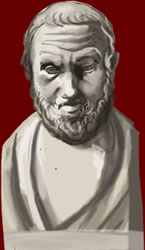

Hippokrates
c. 460 - 377 BC

Very little is known about the life of this doctor. However, he is seen as the father of modern medicine.
He, and his followers, developed a theory that all illness and disease were a result of imbalances in the 'four humours'. The 'four humours' were blood, phlegm, black bile and yellow bile. If these humours were in balance a person would have good health, if not; a person would become ill.
He is also believed to have created the Hippocratic Oath. It made doctors swear always to help, and never to harm, their patients.
|